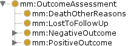
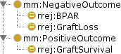

The core:FunctionOutcomeAssessment class is a documentation of an outcome which captures an initial state, an intervention and a final state. The states are expressed as one or more observations. Here is subject Bob's death from other causes:
:subjectsDeathOutcome a core:DeathOtherReasons ; core:hasObservationTime "2013-08-28T16:15:00Z"^^xsd:dateTime ; core:beforeIntervention :subjectsOutpatientGFR52 , :subjectsGFRpreOp ; core:hasIntervention :subjectOnImmunosuppressantA , :subjectsTransplant ; core:afterIntervention :subjectsDeath ; core:hasResultValue core:PatientDeath .
Bob's death outcome is not explicitly asserted to be a core:FunctionOutcomeAssessment, but instead a subclass, core:DeathOtherReasons. core:NegativeOutcome and core:PositiveOutcome are convenient classifications of outcomes to help substantiate claims of safety and efficacy. While core:DeathOtherReasons is certainly negative for the patient, it does not necessarily reflect negatively on the safety or efficacy of the study drug. This organization is visible in the class hierarchy:
All outcome assements also have a property core:hasResultValue which codifies the assessment, here core:PatientDeath. While death and losses to follow up transend Therapeutic Areas, most codes will be area-specific.
The Renal Rejection Therapeutic Area codifies a set of assessments associated with kidney transplantation. These capture the essential oucomes of a TA study.
RenalX:GraftViability rdfs:subClassOf core:FunctionOutcomeAssessmentValue ; owl:oneOf (xplant:NonFunctioningGraft xplant:SubFunctioningGraft xplant:NormalFunctioningGraft) .
Each assessment code implies a classe of assessment outcome.
For instance, core:hasResultValue value xplant:NonFunctioningGraft allows the reasoner to conclude that something is a RenalX:GraftLoss.
These inferred classes are the classes of outcome assessment specialized to the Renal Rejection Therapeutic Area:
These are also classified as core:NegativeOutcome and core:PositiveOutcomes. In Protégé, they appear twice in the class hierarcy:

Axioms enable OWL to infer that certain events are BPARs.
The axiom core:afterIntervention some (core:hasPathologyFinding value RenalX:BanffIII) and core:hasResultValue value xplant:NonFunctioningGraft asserts that anything with an core:hasResultValue of RenalX:NonFunctioningGraft and an core:afterIntervention of something with an core:hasPathologyFinding of RenalX:BanffIII is a RenalX:BPAR.
As an example, consider subject Sue's graft rejection:
:subjectsRenalBiopsy1report a RenalX:RenalBiopsyReport ; core:hasObservationTime "2013-07-08T16:10:00Z"^^xsd:dateTime ; core:hasPathologyFinding RenalX:BanffIII . # RenalX:BanfIII codes for # evidence of cell-mediated graft attack, T-cell infiltration. :subjectsKidneyBPAR a RenalX:KidneyGraftOutcomeAssessment ; core:hasObservationTime "2013-07-08T16:15:00Z"^^xsd:dateTime ; core:beforeIntervention :subjectsOutpatientGFR23 , :subjectsGFRpreOp ; core:hasIntervention :subjectOnImmunosuppressantA , :subjectsTransplant ; core:afterIntervention :subjectsRenalBiopsy1report ; core:hasResultValue xplant:NonFunctioningGraft .
From this, Protégé is able to infer that a node in Sue's study data called subjectsKidneyBPAR is a member of the class RenalX:BPAR.
(Note that there was no inference based on the name of the node; it was only named that way to help readers understand what that node indicated.)
OWL discovers that every RenalX:BPAR is also a RenalX:GraftLoss because and RenalX:GraftLoss is defined as core:hasResultValue value xplant:NonFunctioningGraft.
It's not known why the interface shows core:hasIntervention min 1 owl:Thing multiple times.
The core:Judgement class is expressed here as a superclass of core:Diagnosis and core:FunctionOutcomeAssessment. It's only purpose is to call out in the class hierarchy that both have a core:hasResultValue property. Perhaps this distinction is unnecessary.
The core:FunctionOutcomeAssessment class is a subclass of core:Observation in case one core:FunctionOutcomeAssessment is used to supply the core:beforeIntervention or core:afterIntervention for a continuing core:FunctionOutcomeAssessment.
$Revision: 1.11 $ of $Date: 2014-03-01 12:28:59 $ by $Author: eric $